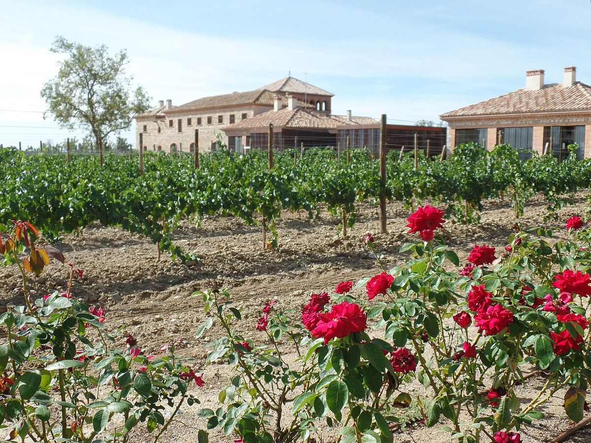

TINTO
Bodega histórica del Alt Empordà vinculada al castillo de Peralada, que elabora vinos tranquilos de la D.O. Empordà y espumosos de la D.O. Cava.

Perelada toma su nombre de la villa de Peralada, en el Alt Empordà, a pocos kilómetros de la frontera francesa y del mar. La tradición vinícola del lugar está ligada al castillo y al antiguo convento del Carmen, donde los monjes elaboraban vino desde la Edad Media; hoy el conjunto acoge un museo y una biblioteca. La bodega pertenece a la familia Suqué Mateu, que también impulsa el conocido festival de música que se celebra cada verano en los jardines del castillo.
El Empordà es una comarca marcada por la tramontana, un viento del norte frío y seco que sanea el viñedo y modera las temperaturas del verano. Perelada cultiva distintas fincas con suelos variados —pizarras, granitos descompuestos, arcillas y gravas— en las que conviven variedades tradicionales como la garnacha y la cariñena (samsó) con otras internacionales como cabernet sauvignon, merlot o syrah.
La gama abarca vinos blancos, rosados y tintos de la D.O. Empordà, entre ellos Perelada 5 Fincas, ensamblaje de varias de sus propiedades, y etiquetas de finca como Finca Garbet. La casa elabora además cavas bajo la marca Castillo Perelada. En los últimos años ha inaugurado una nueva bodega integrada en el paisaje.
El conjunto del castillo de Peralada ofrece visitas que incluyen el museo y la bodega, con posibilidad de cata.